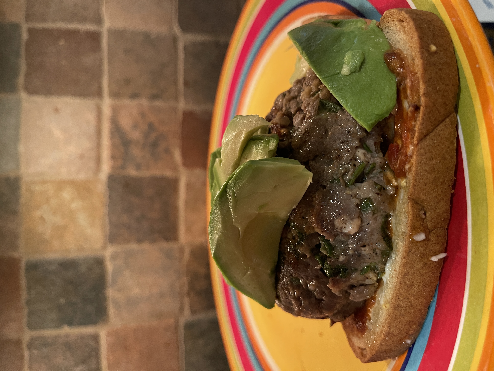
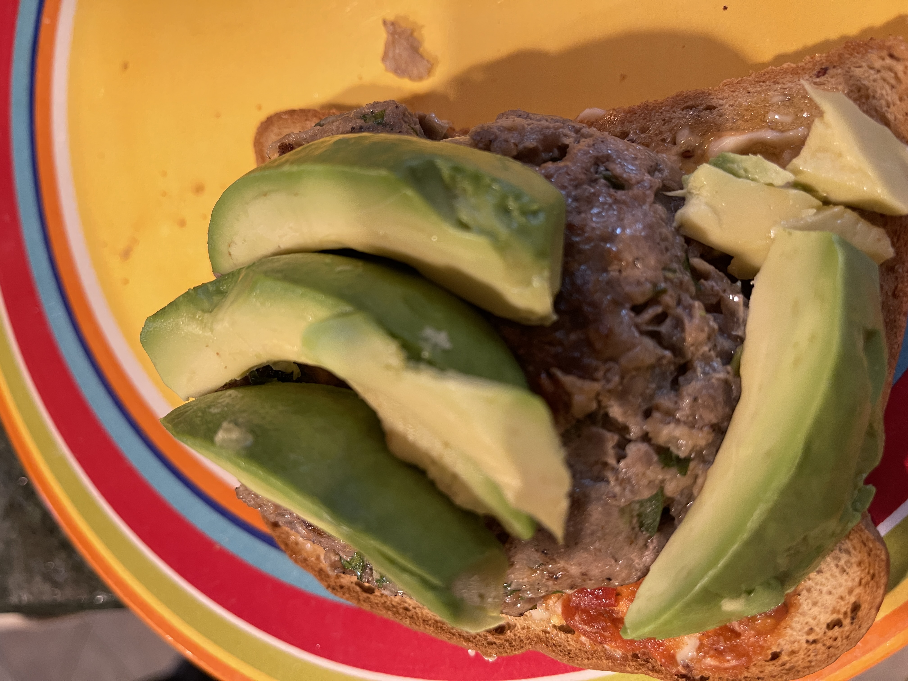

Homemade Hamburgers


Image source: Marek S.
What does this recipe mean to my family
This is my dad's go-to burger recipe. It's flavor is unique and the quality outstanding.
Family Quote
"The word hamburger comes from the German word hamburg "
-Dad
Steps and Instructions
| Ingredients | Measurement |
|---|---|
| Ground Beef | 2 lbs |
| Garlic Cloves | 3-4 |
| Onion | 1/2 to 1 |
| Parsley | Add to taste |
| Oatmeal | 1/4 cup |
| Egg | 1 |
| Salt/Pepper | Add to taste |
| Optional Ingredients | |
| Ketchup | 1/4 cup |
| Mexican Chipotle Paste | 1-2 tsp |
- Gather all of your ingredients into a large bowl
- Mix thuroughly with hands
- Separate, press and cook burgers on a grill or a pan
Tips and Tricks
- Mixing the burger meat too much sometimes creates thougher burgers
- Add tomato, letuce, onions, avocado, etc. for the perfect burger
- Create a delicious sauce with half mayo and half ketchup